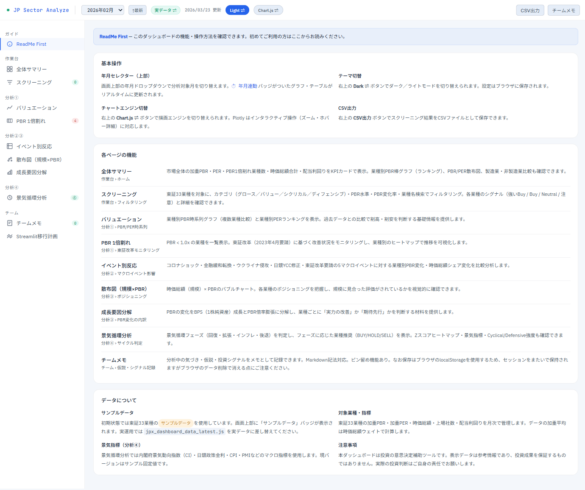

画面イメージ

基本操作
年月セレクター（上部）
画面上部の年月ドロップダウンで分析対象月を切り替えます。⏱ 年月連動 バッジがついたグラフ・テーブルがリアルタイムに更新されます。
テーマ切替
右上の Dark ⇌ ボタンでダーク／ライトモードを切り替えられます。設定はブラウザに保存されます。
チャートエンジン切替
右上の Chart.js ⇌ ボタンで描画エンジンを切り替えられます。Plotly はインタラクティブ操作（ズーム・ホバー詳細）に対応します。
CSV出力
右上の CSV出力 ボタンでスクリーニング結果をCSVファイルとして保存できます。
各ページの機能
全体サマリー
作業台 › ホーム
市場全体の加重PBR・PER・PBR1倍割れ業種数・時価総額合計・配当利回りをKPIカードで表示。業種別PBR棒グラフ（ランキング）、PBR/PER散布図、製造業・非製造業比較も確認できます。
スクリーニング
作業台 › フィルタリング
東証33業種を対象に、カテゴリ（グロース／バリュー／シクリカル／ディフェンシブ）・PBR水準・PBR変化率・業種名検索でフィルタリング。各業種のシグナル（強いBuy / Buy / Neutral / 注意）と詳細を確認できます。
バリュエーション
分析① › PBR/PER時系列
業種別PBR時系列グラフ（複数業種比較）と業種別PERランキングを表示。過去データとの比較で割高・割安を判断する基礎情報を提供します。
PBR 1倍割れ
分析① › 東証改革モニタリング
PBR < 1.0x の業種を一覧表示。東証改革（2023年4月要請）に基づく改善状況をモニタリングし、業種別のヒートマップで推移を可視化します。
イベント別反応
分析② › マクロイベント影響
コロナショック・金融緩和転換・ウクライナ侵攻・日銀YCC修正・東証改革要請の5マクロイベントに対する業種別PBR変化・時価総額シェア変化を比較分析します。
散布図（規模×PBR）
分析③ › ポジショニング
時価総額（規模）× PBRのバブルチャート。各業種のポジショニングを把握し、規模に見合った評価がされているかを視覚的に確認できます。
成長要因分解
分析③ › PBR変化の内訳
PBRの変化をBPS（1株純資産）成長とPBR倍率膨張に分解し、業種ごとに「実力の改善」か「期待先行」かを判断する材料を提供します。
景気循環分析
分析④ › サイクル判定
景気循環フェーズ（回復・拡張・インフレ・後退）を判定し、フェーズに応じた業種推奨（BUY/HOLD/SELL）を表示。Zスコアヒートマップ・景気指標・Cyclical/Defensive強度も確認できます。
チームメモ
チーム › 仮説・シグナル記録
分析中の気づき・仮説・投資シグナルをメモとして記録できます。Markdown記法対応。ピン留め機能あり。なお保存はブラウザのlocalStorageを使用するため、セッションをまたいで保持されますがブラウザのデータ削除で消える点にご注意ください。
データについて
サンプルデータ
初期状態では東証33業種のサンプルデータを使用しています。画面上部に「サンプルデータ」バッジが表示されます。実運用では
jpx_dashboard_data_latest.js を実データに差し替えてください。対象業種・指標
東証33業種の加重PBR・加重PER・時価総額・上場社数・配当利回りを月次で管理します。データの加重平均は時価総額ウェイトで計算します。
景気指標（分析④）
景気循環分析では内閣府景気動向指数（CI）・日銀政策金利・CPI・PMIなどのマクロ指標を使用します。現バージョンはサンプル固定値です。
注意事項
本ダッシュボードは投資の意思決定補助ツールです。表示データは参考情報であり、投資成果を保証するものではありません。実際の投資判断はご自身の責任でお願いします。
業種スクリーニング結果年月連動
| 業種 | カテゴリ | 加重PBR | 前期比 | 加重PER | 時価総額 | 上場社数 | 配当利回り | シグナル | アクション |
|---|
年月連動
市場全体 加重PBR
1.2x
2020年01月
市場全体 加重PER
15.5x
連結ベース
PBR 1倍割れ業種
13/33
▼2 前月比
時価総額合計
657兆円
▲3.2% 前月比
PBR最大業種
精密機器
3.4x
PBR上位・下位（加重）年月連動
市場全体 加重PBR推移縦線マーカー
強いBuy候補業種
Buy候補業種
注意フラグ業種
業種別 PBR 水準マップ年月連動
市場トレンド
PBR・PER推移
PBR・PER推移
業種ランキング
変化率順
変化率順
規模別スプレッド
大・中・小型
大・中・小型
製造・非製造
業態比較
業態比較
単純/加重スプレッド
中小 vs 大型乖離
中小 vs 大型乖離
加重PBR・PER 時系列（市場全体）縦線マーカー
比較モード
業種別 PBR変化率ランキング年月連動
大型株 PBR
1.3x
中型株 PBR
1.2x
小型株 PBR
1.1x
規模別PBR推移
製造業 vs 非製造業 PBR ｜ 縦線=東証改革要請 2023/04
業種別 単純−加重 PBRスプレッド年月連動
業種別 PBR水準ヒートマップ（月次）
① コロナ底 2020/03
② コロナ回復 2021/06
③ 利上げ 2022/06
④ 東証改革 2023/06
⑤ 日銀利上げ 2026/02
PBR変化量
時価総額シェア変化（pp）
投資判断メモ（このイベント）
業種別 時価総額 × PBR バブルチャート年月連動
現在の景気フェーズ
● 新サイクル回復期
CI一致指数が上昇傾向へ転換、政策金利は正常化済みで低位安定。
グロース・バリュー系が有利なフェーズ。シクリカルは引き続き様子見。
CI 一致指数（前月比）
–
–
CI 先行指数（前月比）
–
–
政策金利（無担保翌日物）
–
–
10年国債利回り
–
–
フェーズ判定チャート
CI・金利推移
CI・金利推移
BUY / HOLD / SELL 推奨
フェーズ別推奨
フェーズ別推奨
PBR乖離Zスコア
同フェーズ比較
同フェーズ比較
シクリカル/ディフェンシブ
C/D比率
C/D比率
総合シグナル
スコアランキング
スコアランキング
CI一致指数・政策金利 推移 ＋ フェーズ帯縦線マーカー
回復期
拡張期
後退前期
後退期
※ 実運用時は内閣府CIを自動取得
BUY 推奨業種年月連動
SELL 寄り業種
全業種 フェーズ推奨一覧年月連動
| 業種 | カテゴリ | 加重PBR | フェーズ推奨 |
|---|
業種別 PBR乖離Zスコア（同フェーズ過去平均比）年月連動
C/D 相対強度 時系列縦線マーカー
フェーズシグナル判定
業種別 総合スコアランキング年月連動
業種別 時価総額成長の要因分解年月連動
新規メモ
フィルター:
Phase 1 ✓
HTML単体（現行）
完了
スクリーニング
カテゴリ・PBR・変化率フィルター／シグナル表示
バリュエーション分析
PBR/PER時系列・業種ランキング・規模別・製造非製造
イベント別反応
5マクロイベント × PBR変化・シェア変化
散布図・要因分解
時価総額×PBRバブル／BPS成長・PBR膨張分解
チームメモ
セッション内の仮説・シグナル記録（揮発性）
CSV出力
スクリーニング結果のCSVエクスポート
景気循環分析（④）
フェーズ判定・BUY/HOLD/SELL推奨・Zスコア・C/D強度・総合シグナル
Phase 2
Python / Streamlit 移行
計画中
実データ自動読込
perpbr*.xlsx / *.pdf を自動スキャン・パース。ファイル追加で即反映
全74ヶ月 時系列アニメーション
散布図の月次スライダー再生。HTML版は2時点比較のみ
ラグ相関分析
PBR先行 → シェア拡大のリードラグを業種別に検証
暗示的純資産推計
時価総額÷PBR → 超過評価額（成長期待・のれん）の積み上げ
チームメモDB永続化
SQLiteでメモを保存・タグ・担当者フィルタ対応
アラート機能
PBR閾値割れ・急変検知を毎月自動メール通知
景気指標 自動取得
内閣府CI・日銀政策金利をAPIで自動取得しフェーズ判定をリアルタイム更新
移行時のコード変更ポイント
# HTML版（data.js）のサンプルデータを
# Pythonの load_all_perpbr() / load_all_sector_cap() に置き換えるだけ
# st.sidebar.selectbox("年月", months) → ymSel相当
# st.plotly_chart(fig) → Chart.js相当
# st.session_state.notes → localStorageメモ相当
# → ロジックの80%はHTML版と同じ構造で流用可
# Pythonの load_all_perpbr() / load_all_sector_cap() に置き換えるだけ
# st.sidebar.selectbox("年月", months) → ymSel相当
# st.plotly_chart(fig) → Chart.js相当
# st.session_state.notes → localStorageメモ相当
# → ロジックの80%はHTML版と同じ構造で流用可